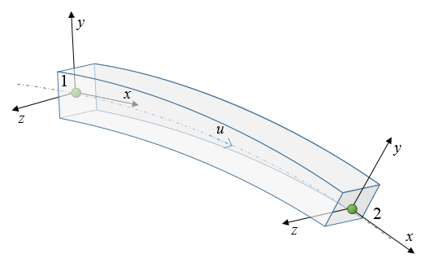
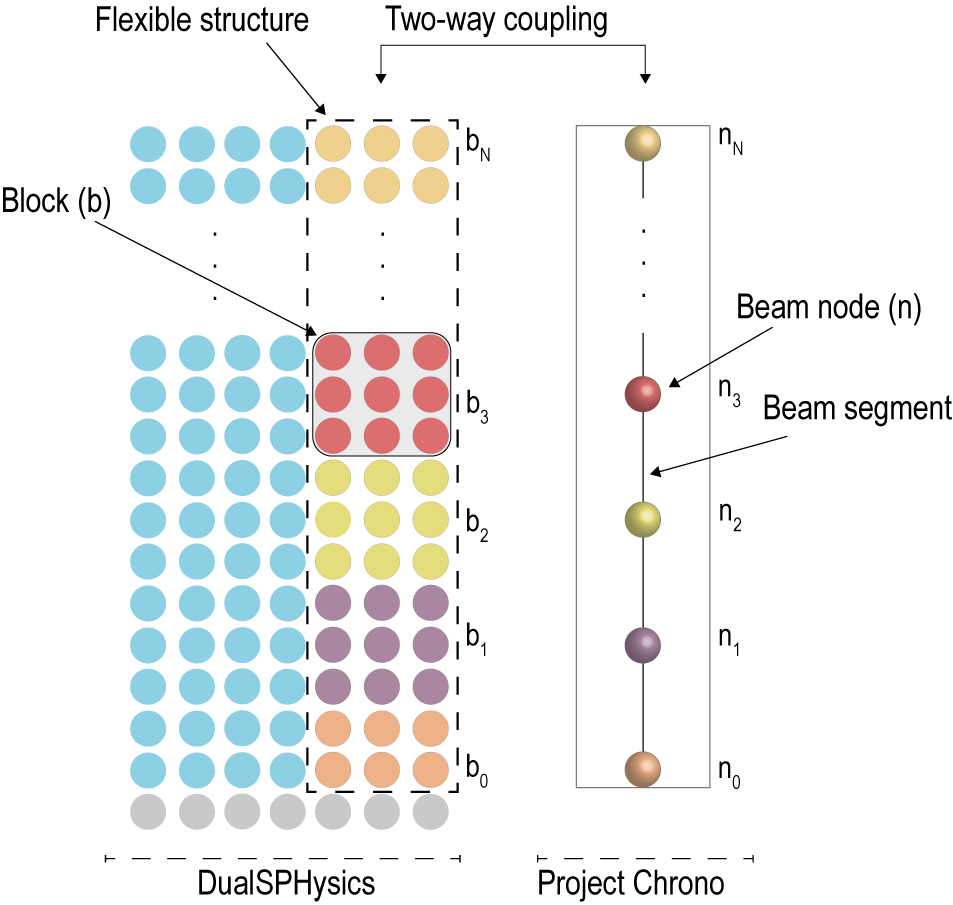
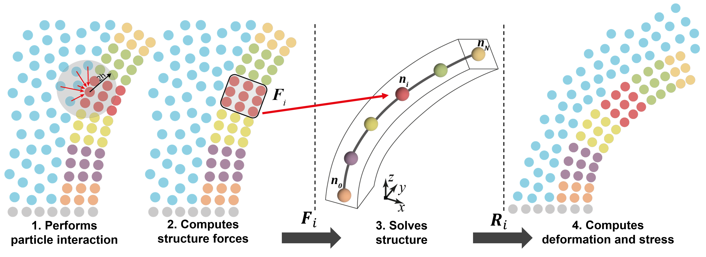
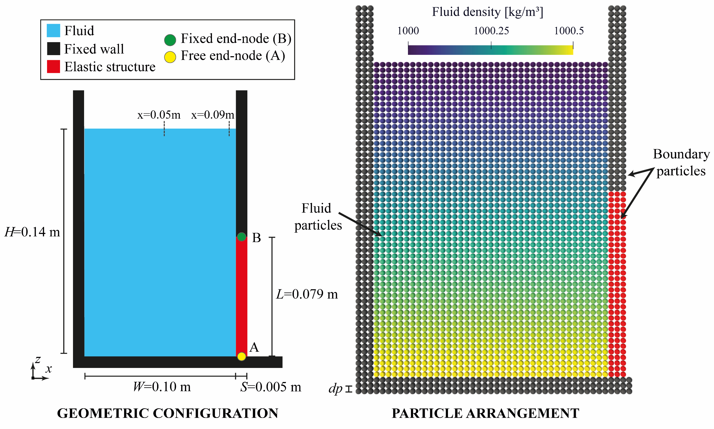
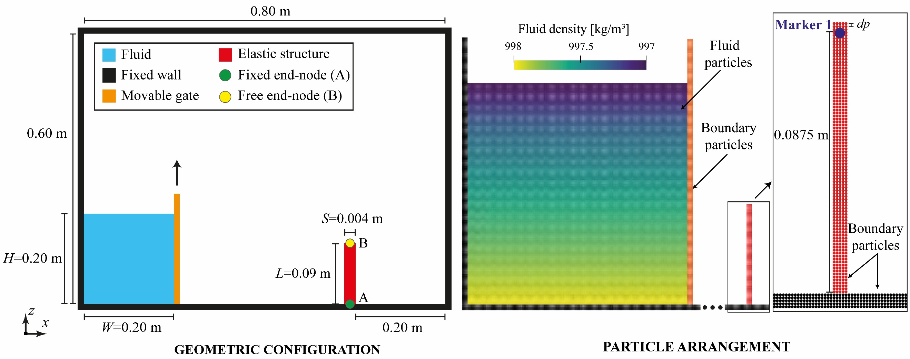

ChronoFEA¶
Under review by Iván Martínez Estévez
Euler–Bernoulli beams, structural nodes and partitioned fluid–structure interaction in DualSPHysics v6.
Scope and structural formulation¶
ChronoFEA couples the SPH fluid solver in DualSPHysics to the finite-element structural solver in Project Chrono through DSPHChronoLib. The structure has two representations: boundary particles provide its interface with the fluid, while a beam mesh supplies its elastic response. Fluid loading deforms the beam; its updated kinematics move the boundary particles for the subsequent fluid interaction. This is a two-way, partitioned SPH–FEA model.
The documented element is a three-dimensional Euler–Bernoulli beam with a corotational formulation, allowing large rotations and displacements while expressing the elastic response in the element frame. Cross-section properties and the beam discretisation govern the structural model. General lists of upstream Chrono capabilities do not imply that shells, cables or solid finite elements can be selected through this interface: the current XML reader accepts beamEuler here.
Rigid-body Chrono describes bodies whose deformation is not resolved, together with mechanical links and contacts. Flexible structures describes the separate Total Lagrangian SPH implementation internal to DualSPHysics. Its flexstrucs material and clamp definitions are not ChronoFEA configuration. These are complementary models with different structural discretisations and XML interfaces.
The coupling requires compatible DualSPHysics, DSPHChronoLib and Chrono libraries with FEA support. A fluid computation on the GPU does not make the Chrono structural solve a GPU finite-element solve. The workshop's compilation examples describe a particular build; use the installation and libraries supplied with the selected release.

Nodes, segments and section properties¶
segments specifies the number of beam segments between pointA and pointB. For the documented Euler beam, the number of nodes is
Structural resolution is independent of the SPH particle spacing. Refining the boundary particles alone does not refine the beam mesh. Each endpoint may refer to a shared nodes/node by noderef, or define a unique node directly by coordinates and fixed. A shared reference establishes connectivity; equal coordinates alone should not be treated as an explicit shared-node definition. A fixed node constrains its structural motion; a free node participates in the beam dynamics. Nodal orientation is part of the beam representation as well as nodal position.
| Quantity | XML | Units / meaning |
|---|---|---|
| Segment count | beamEuler/@segments |
Integer; 64 segments give 65 nodes |
| Circular section | section/@shape="0", radius/@value |
Radius in m |
| Rectangular section | section/@shape="1", width, thickness |
Dimensions in m; Y and Z section directions |
| Structural density | density/@value |
kg/m³; beam material density |
| Young's modulus | youngmodulus/@value |
N/m² |
| Poisson's ratio | poisson/@value |
Dimensionless |
| Damping coefficient | rgdamping/@value |
Rayleigh damping parameter used by the beam model |
| Axial rigidity multiplier | axrigmul/@value |
Dimensionless; default 1; modifies axial rigidity |
The current section calculation uses the rectangular second moments and the circular second moment
Here \(b\) is section width, \(h\) is section thickness and \(r\) is radius. These describe the section, rather than the fluid smoothing length. rgdamping must not be interpreted as the SPH viscosity or assumed to provide a universal percentage of critical damping. Likewise, an axial multiplier changes structural stiffness and must not be introduced as a harmless formatting adjustment. Supply material properties explicitly rather than borrowing reference-example values.
SPH–FEA coupling¶
The workshop illustrates structural particles grouped into blocks associated with beam nodes. The current implementation also stores each particle's position along a segment and its coordinates in a beam frame. This lets the coupling transfer fluid interaction to the structural discretisation and reconstruct the deformed boundary from the updated beam.

The exchange follows four stages:
- DualSPHysics evaluates particle interactions at the fluid–structure interface.
- The coupling accumulates structural interaction forces for the beam representation.
- Chrono advances the structure, including its material response and configured mechanical restrictions.
- Updated nodal positions and orientations determine the boundary deformation; the coupling reconstructs particle motion and evaluates structural deformation and stress information.
For nodal-force transfer, the current implementation distributes a particle's interaction force to the two segment endpoints using its fractional axial coordinate \(\xi_p\):
The weights are clipped to the interval \([0,1]\). With linearloads enabled, interaction forces are accumulated per segment and divided by the current segment length to obtain distributed loads in N/m. This is a different transfer mode from the nodal-force option; it is not an instruction to divide an external force file by particle spacing.

userot="true" uses nodal rotations in the reconstruction of the beam frame and bending information. With userot="false", reconstruction uses nodal positions instead. This switch does not redefine the finite-element type or remove all rotational degrees of freedom from the Chrono structural system.
The XML excerpts below are independent selections from their named source. They do not form a newly assembled executable case. Keep the chosen case's geometry, variables, material files, normal vectors and execution settings together.
XML organisation¶
| XML location | Responsibility |
|---|---|
case/casedef/geometry |
Fluid and structural boundary particles, spacing and marker assignment |
case/casedef/floatings |
Classifies the structural boundary as floating |
case/casedef/properties |
Material associations used where applicable, including contact properties |
case/casedef/normals |
Boundary normal definitions for mDBC |
case/execution/special/chrono/configfea |
Selects FEA particle objects, output and loading options |
chrono/nodes |
Shared structural node definitions |
chrono/feafloating/beamEuler |
Beam endpoints, segment count and cross-section properties |
chrono/link_feahinge |
Optional FEA-node hinge to the world |
chrono/collision |
Contact configuration, separate from structural elasticity |
case/execution/parameters |
Fluid, boundary and integration settings of the complete case |
The root of the coupling configuration is case/execution/special/chrono. configfea, nodes and feafloating are siblings under chrono; there is no extra chronofea wrapper. The boundary marker in configfea/floating must identify an existing feafloating body and the corresponding particle boundary. It is not the user-defined node reference or the complete particle mk value.
Floating classification and structural density¶
The horizontal-beam case classifies its particle boundary as floating using the following declaration. The beam's physical material density is specified separately in its section. Do not substitute the particle declaration's rhopbody for that section density.
XML excerpt — beam-floating. XML location: case/casedef. Source: examples/chronofea/01_HorizontalBeam/CaseHorizontalBeam_Def.xml. Retain the complete source case and its surrounding definitions.
Structural nodes and beam definition¶
The horizontal beam has two fixed endpoints at (0, 0, −0.025) m and (1, 0, −0.025) m. Its rectangular section is 1 m wide and 0.05 m thick; its density is 2700 kg/m³ and Young's modulus is 67.5 × 10⁹ N/m². The source retains an inactive _size illustration; active rectangular dimensions are width and thickness.
XML excerpt — beam-nodes. XML location: case/execution/special/chrono. Source: examples/chronofea/01_HorizontalBeam/CaseHorizontalBeam_Def.xml. Retain the complete source case and its surrounding definitions.
<nodes>
<node ref="0" mass="0" fixed="true" x="0" y="0.0" z="-0.025" comment="Start of beam" />
<node ref="1" mass="0" fixed="true" x="1" y="0.0" z="-0.025" comment="End of beam" />
</nodes>
XML excerpt — horizontal-beam. XML location: case/execution/special/chrono. Source: examples/chronofea/01_HorizontalBeam/CaseHorizontalBeam_Def.xml. Retain the complete source case and its surrounding definitions.
<feafloating id="cylinder1" mkbound="50" massbody="0" type="1" modelfile="AutoActual">
<beamEuler segments="64" comment="Number of nodes=Segments+1. Euler beams only use linear order.">
<pointA noderef="0" />
<pointB noderef="1" />
<section shape="1" comment="Shape 0:Circular, 1:Rectangular. (default=0)">
<_size x="1.00" y="1.00" z="0.05" comment="Size of the beam sides" />
<width value="1.00" comment="Width of the beam (Y-direction)" units_comment="m" />
<thickness value="0.05" comment="Thickness of the beam (Z-direction)" units_comment="m" />
<density value="2700" comment="Density of the beam." units_comment="kg/m^3" />
<poisson value="0.34" comment="Poisson ratio." />
<youngmodulus value="67.5E09" comment=" Young elastic modulus." units_comment="N/m^2" />
<rgdamping value="0.000" comment="Rayleigh damping ratio." />
</section>
</beamEuler>
</feafloating>
The node-count comment above follows the current format. The source case's older Segments+order wording does not introduce an XML order setting. Both fixed endpoints describe this particular supported beam, rather than a free cantilever.
Circular sections and unique endpoints¶
The reference supplies a separate circular-beam alternative. Its 0.03 m radius and 210 × 10⁶ N/m² modulus are illustrative values, not defaults for a steel beam or replacements for the rectangular example.
XML excerpt — circular-beam. XML location: case/execution/special/chrono. Source: doc/xml_format/_FmtXML_ChronoFEA.xml; this is a reference alternative, requiring compatible body and case definitions.
<feafloating id="cylinder1" mkbound="51" modelfile="AutoActual">
<!-- Define type of FEA Body -->
<beamEuler segments="10" comment="Number of nodes=Segments+1. Euler beams only use linear order.">
<pointA noderef="0" comment="Start of beam"/>
<pointB noderef="1" comment="End of beam"/>
<!-- Define the section properties -->
<!-- Circular beam -->
<section shape="0" comment="Shape 0:Circular, 1:Rectangular. (default=0)">
<radius value="0.03" comment="Radius of cylinder." units_comment="m"/>
<density value="7850" comment="Density of the beam." units_comment="kg/m^3"/>
<poisson value="0.3" comment="Poisson ratio."/>
<youngmodulus value="210e6" comment=" Young elastic modulus." units_comment="N/m^2"/>
<rgdamping value="0.0" comment="Rayleigh damping ratio."/>
</section>
</beamEuler>
</feafloating>
An endpoint can instead use fixed, x, y and z directly, as shown in the complete reference. Keep shared noderef endpoints and unique coordinate-defined endpoints distinct. Optional node mass adds a nodal mass in kg; it is separate from section density.
Output, loading and initial conditions¶
FEA output configuration¶
This is the horizontal-beam case's complete configfea section. Its 0.0001 s CSV interval and precision 16 are case-specific. They are distinct from fluid particle output and the ordinary Chrono exchange CSV interval.
XML excerpt — fea-output. XML location: case/execution/special/chrono. Source: examples/chronofea/01_HorizontalBeam/CaseHorizontalBeam_Def.xml. Retain the complete source case and its surrounding definitions.
<configfea>
<savedata value="0.0001" comment="Saves CSV with node positions and node forces (0=all steps)">
<start value="0" comment="Start time to save data. (default=0)" />
<finish value="10" comment="End time to save data. (default=#TimeMax)" />
<precision value="16" comment="Number of digits to save in CSV. (default=6)" />
</savedata>
<savevtk value="true" comment="Saves vtk with nodes and force points (default=false)" />
<floating mkbound="50">
<linearloads value="true" comment="Apply linear loads along the beams. (default=false)" />
</floating>
</configfea>
| Setting | Effect |
|---|---|
savedata/@value |
Negative disables periodic FEA CSV; 0 saves every step; positive values specify seconds |
savedata/start, finish |
Requested output time window; retain the complete case's simulation duration |
savedata/precision |
CSV numerical precision; reader default 6 |
savevtk |
Enables both node and geometry VTK output; default false |
savevtk_nodes |
Overrides node VTK output; otherwise inherits savevtk |
savevtk_geo |
Overrides beam geometry VTK output; otherwise inherits savevtk |
floating/@userot |
Uses node rotations in reconstruction; default true |
Output paths are relative to the selected simulation output directory. The implementation writes FEA CSV data under fea_data/; node, geometry and force visualisations are managed separately, including FeaVtk/FeaNodes_mkbound_<number>_<sequence>.vtk and node-force products according to enabled outputs. The ordinary Chrono savedata does not replace the FEA output configuration.
External nodal forces and distributed loads¶
loadforces supplies nodal forces in N. loadloads supplies distributed loads in N/m and enables the distributed-load mode. Both require their own external CSV data consistent with the beam discretisation. onlyfile="false" retains the SPH interaction contribution; onlyfile="true" suppresses that contribution for the object. If both loading types are present, an enabled onlyfile on either suppresses SPH loading. This flag should not be interpreted as disabling every independent force in Chrono, such as its configured gravity.
The following are separate reference alternatives for boundary 53. Do not create duplicate configfea/floating entries for one object by concatenating the illustrative alternatives in the complete format.
XML excerpt — external-forces. XML location: case/execution/special/chrono/configfea. Source: doc/xml_format/_FmtXML_ChronoFEA.xml; this is a reference alternative, requiring compatible body and case definitions.
<floating mkbound="53">
<loadforces onlyfile="false" file="CaseExternalForces.csv" units_comment="N"/>
</floating>
XML excerpt — external-loads. XML location: case/execution/special/chrono/configfea. Source: doc/xml_format/_FmtXML_ChronoFEA.xml; independent reference alternative.
<floating mkbound="53">
<loadloads onlyfile="false" file="CaseExternalLoads.csv" units_comment="N/m"/>
</floating>
For SPH distributed loads, use linearloads within the relevant FEA object, as in the horizontal-beam output excerpt. Choose a consistent nodal-force or distributed-load arrangement; do not assume that every combination of nodal-force and distributed-load files has an established physical interpretation.
Initial conditions and gravity¶
Initial linear and angular velocities can be specified per FEA object. The following independent reference alternative uses m/s and rad/s respectively; it requires an existing body 55.
XML excerpt — initial-velocities. XML location: case/execution/special/chrono/configfea. Source: doc/xml_format/_FmtXML_ChronoFEA.xml; this is a reference alternative, requiring compatible body and case definitions.
<floating mkbound="55">
<linearvelini x="1" y="3" z="2" units_comment="m/s" />
<angularvelini x="0.2" y="0.4" z="0.6" units_comment="rad/s" />
</floating>
The shared chrono/gravity setting controls Chrono gravity; the FEA reference describes it as distributed loading along beam segments. Preserve the selected case's gravity and initial conditions rather than adding values from this alternative.
Mechanical connections and contacts¶
FEA-node hinge¶
link_feahinge connects a referenced FEA node to a hinge fixed in space. This is a different declaration from the rigid-body link_hinge. noderef identifies an existing structural node, and idbody1 identifies the FEA body. The optional rotpoint is a global point; when omitted, the current reader uses the initial node position. rotvector is the global hinge axis.
XML excerpt — fea-hinge. XML location: case/execution/special/chrono. Source: doc/xml_format/_FmtXML_ChronoFEA.xml; this is a reference alternative, requiring compatible body and case definitions.
<link_feahinge idbody1="cylinder1" noderef="0">
<rotpoint x="0" y="0" z="0" comment="Point for rotation in global coordinates (optional)" />
<rotvector x="0" y="0" z="1" comment="Hinge axis in global coordinates" />
<rotstiffness value="500" comment="Rotational stiffness around hinge axis [Nm/rad]" />
<rotdamping value="10" comment="Rotational damping around hinge axis [Nms/rad]" />
</link_feahinge>
Here rotstiffness=500 has units N·m/rad and rotdamping=10 has units N·m·s/rad. These names must not be replaced by the rigid-hinge stiffness and damping tags. Ensure the chosen node's fixed/free definition is consistent with its intended hinge; do not also fix all its motion and expect a freely rotating support.
Contact alternatives¶
The current FEA format requires SMC when FEA collisions are enabled. The ordinary rigid-body NSC alternative is not a valid substitute. Contacts also require compatible collision geometry and material definitions; modelfile="AutoActual" alone does not enable them.
XML excerpt — fea-collision. XML location: case/execution/special. Source: doc/xml_format/_FmtXML_ChronoFEA.xml; this is a reference alternative, requiring compatible body and case definitions.
<chrono>
<collision activate="true">
<distancedp value="0.5" comment="Allowed collision overlap according Dp (default=0.5)" />
<contactmethod value="1" comment="Contact method type. 0:NSC, 1:SMC. SMC is required for FEA collisions.">
<kn value="1.0e6" comment="SMC normal stiffness." />
<gn value="100" comment="SMC normal damping." />
<adhesion value="0" comment="SMC adhesion." />
</contactmethod>
<feacollision mode="mesh-rigidbody" overlap="0"
comment="mode=mesh-rigidbody|mesh-mesh. overlap=0 uses beam radius/half-size as node-cloud contact radius." />
</collision>
</chrono>
feacollision/@mode selects mesh-rigidbody or mesh-mesh. overlap must be non-negative; the format specifies that 0 uses the beam radius or half-size for the node-cloud contact radius. The three numbered FEA cases cited here disable collisions. Their fluid–structure interaction therefore does not validate either contact alternative. The contact coefficients shown above are reference examples, not calibrated values for arbitrary materials.
Current example configurations¶
Horizontal beam¶
examples/chronofea/01_HorizontalBeam/CaseHorizontalBeam_Def.xml provides the fixed-end beam shown in the excerpts above, using 64 segments, mDBC and the source's fluid/numerical configuration. Its linearloads choice transfers distributed loads. The source also contains historical timestepper value="0" alpha="-0.3" attributes; these must not be used to infer a supported HHT selector in current v6. The current reader selects its implicit Euler setting and reads the documented nested substepping controls. See Chrono time controls.
Flexible gate¶
examples/chronofea/02_FlexibleGate/CaseFlexibleGate_Def.xml describes a 0.079 m gate of thickness 0.005 m. The lower endpoint is free and the upper endpoint fixed; its 40 segments give 41 nodes. Its variables, geometry and inlet/outlet configuration remain part of the complete case.
XML excerpt — gate-nodes. XML location: case/execution/special/chrono. Source: examples/chronofea/02_FlexibleGate/CaseFlexibleGate_Def.xml. Retain the complete source case and its surrounding definitions.
<nodes>
<node ref="0" mass="0" fixed="false" x="0.1025" y="0.0" z="#baseOffset" comment="Start of beam"/>
<node ref="1" mass="0" fixed="true" x="0.1025" y="0.0" z="#beamLength+baseOffset" comment="End of beam"/>
</nodes>
XML excerpt — gate-beam. XML location: case/execution/special/chrono. Source: examples/chronofea/02_FlexibleGate/CaseFlexibleGate_Def.xml. Retain the complete source case and its surrounding definitions.
<feafloating id="cylinder1" mkbound="50" massbody="0" type="1" modelfile="AutoActual">
<beamEuler segments="40" comment="Number of nodes=Segments+1. Euler beams only use linear order.">
<pointA noderef="0"/>
<pointB noderef="1"/>
<section shape="1" comment="Shape 0:Circular, 1:Rectangular. (default=0)">
<_size x="#tbeam" y="1" z="#beamLength" comment="Size of the beam sides"/>
<width value="1" comment="Width of the beam (Y-direction)" units_comment="m"/>
<thickness value="#tbeam" comment="Thickness of the beam (Z-direction)" units_comment="m"/>
<density value="1100" comment="Density of the beam." units_comment="kg/m^3"/>
<poisson value="0.5" comment="Poisson ratio."/>
<youngmodulus value="6.5e6" comment=" Young elastic modulus." units_comment="N/m^2"/>
<rgdamping value="0.02" comment="Rayleigh damping ratio."/>
</section>
</beamEuler>
</feafloating>
Flexible obstacle¶
examples/chronofea/03_FlexibleObstacle/CaseFlexibleObstacle_Def.xml fixes the lower endpoint of a 0.09 m obstacle at (0.602, 0, 0) m and leaves the upper endpoint free. Its 32 segments give 33 nodes. The source defines thickness=0.004, poisson=0.50 and damping=0.005; preserve the expression for Young's modulus and its variables.
XML excerpt — obstacle-nodes. XML location: case/execution/special/chrono. Source: examples/chronofea/03_FlexibleObstacle/CaseFlexibleObstacle_Def.xml. Retain the complete source case and its surrounding definitions.
<nodes>
<node ref="1" mass="0" fixed="true" x="0.602" y="0.0" z="0.00" comment="Start of beam"/>
<node ref="2" mass="0" fixed="false" x="0.602" y="0.0" z="0.09" comment="End of beam"/>
</nodes>
XML excerpt — obstacle-beam. XML location: case/execution/special/chrono. Source: examples/chronofea/03_FlexibleObstacle/CaseFlexibleObstacle_Def.xml. Retain the complete source case and its surrounding definitions.
<feafloating id="cylinder2" mkbound="50" massbody="0" type="1" modelfile="AutoActual">
<beamEuler segments="32" comment="Number of nodes=Segments+1. Euler beams only use linear order.">
<pointA noderef="1"/>
<pointB noderef="2"/>
<section shape="1" comment="Shape 0:Circular, 1:Rectangular. (default=0)">
<_size x="#thickness" y="1" z="0.09" comment="Size of the beam sides"/>
<width value="1.00" comment="Width of the beam (Y-direction)" units_comment="m"/>
<thickness value="#thickness" comment="Thickness of the beam (Z-direction)" units_comment="m"/>
<density value="1164" comment="Density of the beam." units_comment="kg/m^3"/>
<poisson value="#poisson" comment="Poisson ratio."/>
<youngmodulus value="#3500000/(1-poisson*poisson)" comment=" Young elastic modulus." units_comment="N/m^2"/>
<rgdamping value="#damping" comment="Rayleigh damping ratio."/>
</section>
</beamEuler>
</feafloating>
| Current case | Segments / nodes | Density (kg/m³) | Young's modulus (N/m²) | Poisson's ratio | rgdamping |
|---|---|---|---|---|---|
| Horizontal beam | 64 / 65 | 2700 | 67.5E09 | 0.34 | 0.000 |
| Flexible gate | 40 / 41 | 1100 | 6.5e6 | 0.5 | 0.02 |
| Flexible obstacle | 32 / 33 | 1164 | 3500000/(1-poisson*poisson) |
0.50 | 0.005 |
These are distinct configurations. In particular, Poisson's ratio 0.5 in a beam case must not be used as evidence for the handling of the same value in the separate TL-SPH constitutive implementation.
Geometry and endpoint conventions¶
The following diagrams identify fixed and free endpoints and particle arrangements. Retain the material values, segment counts and XML settings of the selected current case above.


Structural and particle resolution, constitutive assumptions and the represented fluid phases require assessment for the intended application.
Limitations and related documentation¶
This guide covers the currently documented Euler beam interface. A beam idealisation needs a suitable structural geometry and resolution; it does not establish a general three-dimensional solid constitutive model. Large rotation support does not remove the assumptions of Euler–Bernoulli theory. Contacts, external loads, hinges and substepping need a compatible complete configuration and appropriate numerical validation.
- Chrono rigid-body XML Guide, including shared collision and time controls and the complete Chrono format.
- TL-SPH Flexible Structures, for the independent particle-based structural formulation.
- ChronoFEA Examples Catalogue, for the three numbered families and their original videos.
- mDBC XML Guide, for boundary normals and slip treatment.
References¶
Martínez-Estévez et al. (2023), Coupling an SPH-based solver with an FEA structural solver to simulate free surface flows interacting with flexible structures, Computer Methods in Applied Mechanics and Engineering 410, 115989. DOI.
Martínez-Estévez et al. (2023), Coupling of an SPH-based solver with a multiphysics library, Computer Physics Communications 283, 108581. DOI.
Antoci, Gallati and Sibilla (2007), Numerical simulation of fluid–structure interaction by SPH, Computers & Structures 85, 879–890. DOI.
Liao, Hu and Sueyoshi (2015), Free surface flow impacting on an elastic structure: Experiment versus numerical simulation, Applied Ocean Research 50, 192–208. DOI.
Full ChronoFEA XML format reference¶
The complete dedicated format below preserves its illustrative alternatives, comments and placeholders. It is a format collection, not a single executable simulation. Its repeated bodies and alternative definitions must not be combined indiscriminately. Use the shared Chrono reference linked above for ordinary rigid-body configuration.
doc/xml_format/_FmtXML_ChronoFEA.xml
<?xml version="1.0" encoding="UTF-8" ?>
<!-- *** DualSPHysics [ChronoFea] v6.0 (16-06-2026) *** -->
<!-- *** class: JChronoObjectsFea *** -->
<!----------------------------------------------------------------------------------->
<!----------------------------------------------------------------------------------->
<!-- *** Example to define the Finite Elements using Chrono *** -->
<casedef>
...
<mainlist>
<!-- Cylinder -->
<setmkbound mk="51" />
<drawcylinder radius="0.03">
<point x="1.5" y="0.0" z="0.01" />
<point x="1.5" y="0.0" z="0.45" />
</drawcylinder>
<shapeout file="cylinder1" />
<!-- Rectangle -->
<setmkbound mk="52" />
<drawbox>
<boxfill>solid</boxfill>
<point x="0" y="-0.02" z="-0.02" />
<size x="0.35" y="0.04" z="0.04" />
</drawbox>
<shapeout file="rectangle1" />
</mainlist>
...
<!-- Define the FEA bodies as floatings -->
<floatings>
<floating mkbound="51-53" rhopbody="0.01" />
</floatings>
<!-- Define the properties of materials -->
<properties>
<propertyfile file="Floating_Materials.xml" path="materials" />
<links>
<link mkbound="51" property="steel" comment="Property for the cylinder" />
<link mkbound="52" property="steel" comment="Property for the rectangle" />
</links>
</properties>
...
</casedef>
<execution>
<special>
<chrono>
<!-- Define a list of FEA bodies -->
<configfea>
<savedata value="0.01" comment="Saves CSV with node positions, forces, velocities, accelerations and rotations (0=all steps)">
<start value="0" comment="Start time to save data. (default=0)" />
<finish value="10" comment="End time to save data. (default=#TimeMax)" />
<precision value="6" comment="CSV precision (default=6)" />
</savedata>
<savevtk value="true" comment="Saves VTK nodes and geometry (default=false)" />
<savevtk_nodes value="true" comment="Saves VTK nodes (default=savevtk)" />
<savevtk_geo value="true" comment="Saves VTK beam geometry (default=savevtk)" />
<!-- Define each FEA body -->
<!-- userot=true enable the node rotations to compute the deformation/bendinf of the structure -->
<floating mkbound="51" userot="true" />
<!-- userot=false disable the node rotations; it uses the node positions to compute the deformation/bendinf of the structure -->
<floating mkbound="52-53" userot="false" />
<!-- Load external forces from csv file-->
<!--*** onlyfile indicates which forces will be applied to the FEA object. ***-->
<!--*** To apply only forces loaded from file (using onlyfile="true" or onlyfile="1") ***-->
<!--*** To calculate forces by the summation of the particle interaction and the forces ***-->
<!--*** loaded from a the file (using onlyfile="false" or onlyfile="0"). ***-->
<!--*** It is an optional. Default=false ***-->
<floating mkbound="53">
<loadforces onlyfile="false" file="CaseExternalForces.csv" units_comment="N"/>
</floating>
<!-- Load external loads from csv file-->
<!--*** onlyfile indicates which forces will be applied to the FEA object. ***-->
<!--*** To apply only loads loaded from file (using onlyfile="true" or onlyfile="1") ***-->
<!--*** To calculate forces/loads by the summation of the particle interaction and the ***-->
<!--*** forces loaded from a the file (using onlyfile="false" or onlyfile="0"). ***-->
<!--*** It is an optional. Default=false ***-->
<floating mkbound="53">
<loadloads onlyfile="false" file="CaseExternalLoads.csv" units_comment="N/m"/>
</floating>
<!-- Apply linear loads along the beams-->
<!--*** Uses the ChLoadBeamWrenchDistributed object to apply them . ***-->
<!--*** It is an optional. Default=false ***-->
<floating mkbound="54">
<linearloads value="true" comment="Apply linear loads along the beams. (default=false)"/>
</floating>
<!-- Apply initial conditions -->
<!--*** linearvelini. Linear velocities ***-->
<!--*** angularvelini. Angular velocities ***-->
<floating mkbound="55">
<linearvelini x="1" y="3" z="2" units_comment="m/s" />
<angularvelini x="0.2" y="0.4" z="0.6" units_comment="rad/s" />
</floating>
</configfea>
<!-- Disable collisions for chrono -->
<collision activate="false" />
<!-- Enable/Disable the gravity in Chrono for FEA. It is applied as linear loads along the segments -->
<gravity value="true" comment="Use of gravity acceleration. (default=true)"/>
<!-- Node section -->
<nodes>
<node ref="0" fixed="false" x="0" y="0" z="0"/>
<node ref="1" fixed="false" x="0.35" y="0" z="0"/>
<node ref="2" fixed="true" x="0.35" y="0" z="-0.35"/>
<node ref="3" fixed="false" x="0.35" y="0" z="0" mass="0.5"/>
<node ref="4" fixed="true" x="0.0" y="0" z="-0.35" mass="1.5"/>
</nodes>
<!-- Define a FEA body floating (FEA Body)-->
<feafloating id="cylinder1" mkbound="51" modelfile="AutoActual">
<!-- Define type of FEA Body -->
<beamEuler segments="10" comment="Number of nodes=Segments+1. Euler beams only use linear order.">
<pointA noderef="0" comment="Start of beam"/>
<pointB noderef="1" comment="End of beam"/>
<!-- Define the section properties -->
<!-- Circular beam -->
<section shape="0" comment="Shape 0:Circular, 1:Rectangular. (default=0)">
<radius value="0.03" comment="Radius of cylinder." units_comment="m"/>
<density value="7850" comment="Density of the beam." units_comment="kg/m^3"/>
<poisson value="0.3" comment="Poisson ratio."/>
<youngmodulus value="210e6" comment=" Young elastic modulus." units_comment="N/m^2"/>
<rgdamping value="0.0" comment="Rayleigh damping ratio."/>
</section>
</beamEuler>
</feafloating>
<!-- Connect a FEA node to a 3D hinge fixed in space. If rotpoint is omitted, the initial position of noderef is used as hinge point. -->
<link_feahinge idbody1="cylinder1" noderef="0">
<rotpoint x="0" y="0" z="0" comment="Point for rotation in global coordinates (optional)" />
<rotvector x="0" y="0" z="1" comment="Hinge axis in global coordinates" />
<rotstiffness value="500" comment="Rotational stiffness around hinge axis [Nm/rad]" />
<rotdamping value="10" comment="Rotational damping around hinge axis [Nms/rad]" />
</link_feahinge>
<!-- Define a FEA body floating (FEA Body)-->
<feafloating id="rectangle1" mkbound="52" modelfile="AutoActual">
<!-- Define type of FEA Body -->
<beamEuler segments="10" comment="Number of nodes=Segments+1. Euler beams only use linear order.">
<pointA noderef="2" comment="Start of beam"/>
<pointB noderef="1" comment="End of beam"/>
<!-- Define the section properties -->
<!-- Rectangular beam -->
<section shape="1" comment="Shape 0:Circular, 1:Rectangular. (default=0)">
<width value="0.04" comment="Width of the beam (Y-direction)" units_comment="m"/>
<thickness value="0.04" comment="Thickness of the beam (Z-direction)" units_comment="m"/>
<density value="7850" comment="Density of the beam." units_comment="kg/m^3"/>
<poisson value="0.3" comment="Poisson ratio."/>
<youngmodulus value="210e6" comment=" Young elastic modulus." units_comment="N/m^2"/>
<rgdamping value="0.0" comment="Rayleigh damping ratio."/>
<axrigmul value="1000" comment="Axial rigidity multiplier to avoid compressibility.(default=1)"/>
</section>
</beamEuler>
</feafloating>
<!-- Define a FEA body floating (FEA Body)-->
<feafloating id="rectangle1" mkbound="53" modelfile="AutoActual">
<!-- Define type of FEA Body -->
<beamEuler segments="10" comment="Number of nodes=Segments+1. Euler beams only use linear order.">
<pointA noderef="3" comment="Start of beam"/>
<pointB fixed="true" x="0.0" y="0" z="-0.35" comment="Unique node. This is not shared." />
<!-- Define the section properties -->
<!-- Rectangular beam -->
<section shape="1" comment="Shape 0:Circular, 1:Rectangular. (default=0)">
<width value="0.04" comment="Width of the beam (Y-direction)" units_comment="m"/>
<thickness value="0.04" comment="Thickness of the beam (Z-direction)" units_comment="m"/>
<density value="7850" comment="Density of the beam." units_comment="kg/m^3"/>
<poisson value="0.3" comment="Poisson ratio."/>
<youngmodulus value="210e6" comment=" Young elastic modulus." units_comment="N/m^2"/>
<rgdamping value="0.0" comment="Rayleigh damping ratio."/>
<axrigmul value="1000" comment="Axial rigidity multiplier to avoid compressibility.(default=1)"/>
</section>
</beamEuler>
</feafloating>
...
</chrono>
</special>
...
</execution>
<!----------------------------------------------------------------------------------->
<!----------------------------------------------------------------------------------->
<!-- *** Alternative Chrono FEA collision definitions *** -->
<!-- *** FEA bodies require SMC contacts when collisions are enabled.*** -->
<chrono>
<collision activate="true">
<distancedp value="0.5" comment="Allowed collision overlap according Dp (default=0.5)" />
<contactmethod value="1" comment="Contact method type. 0:NSC, 1:SMC. SMC is required for FEA collisions.">
<kn value="1.0e6" comment="SMC normal stiffness." />
<gn value="100" comment="SMC normal damping." />
<adhesion value="0" comment="SMC adhesion." />
</contactmethod>
<feacollision mode="mesh-rigidbody" overlap="0"
comment="mode=mesh-rigidbody|mesh-mesh. overlap=0 uses beam radius/half-size as node-cloud contact radius." />
</collision>
</chrono>
<!----------------------------------------------------------------------------------->
<!----------------------------------------------------------------------------------->
<!--*** Beam shapes ***-->
<section shape="0" comment="Shape 0:Circular, 1:Rectangular. (default=0)">
<radius value="0.03" comment="Radius of cylinder." units_comment="m"/>
...
</section>
<!-- Rectangular -->
<section shape="1" comment="Shape 0:Circular, 1:Rectangular. (default=0)">
<width value="0.04" comment="Width of the beam section (Y-direction)." units_comment="m"/>
<thickness value="0.04" comment="Thickness of the beam section (Z-direction)." units_comment="m"/>
...
</section>
<!----------------------------------------------------------------------------------->
<!----------------------------------------------------------------------------------->
<!--*** Building modes ***-->
<!-- Automatic using ChBuilder. Define a number of segments, pointA and PointB -->
<beamEuler segments="10" comment="Number of nodes=Segments+1. Euler beams use linear order.">
<pointA fixed="true" x="0" y="0" z="0" comment="Start of beam"/>
<pointB fixed="false" x="0.35" y="0" z="0" comment="End of beam"/>
...
</beamEuler>